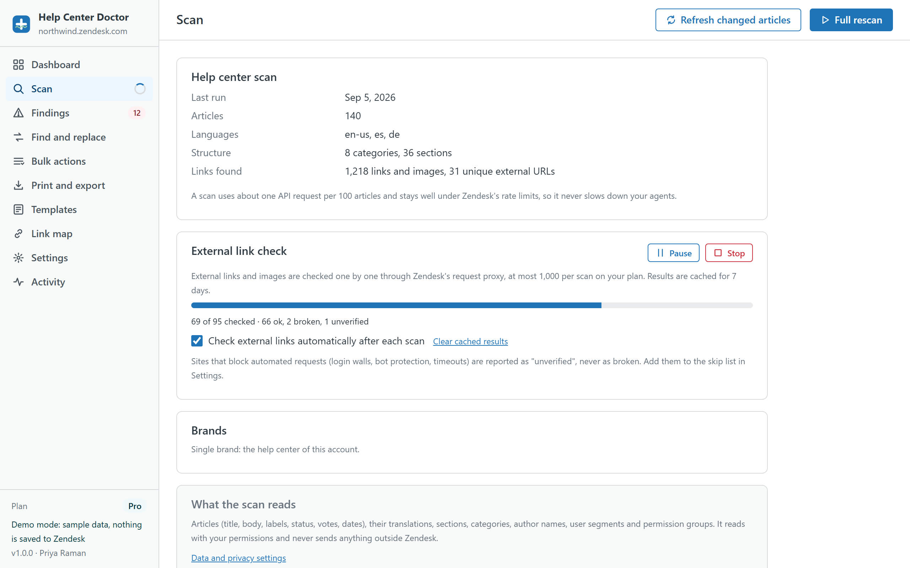
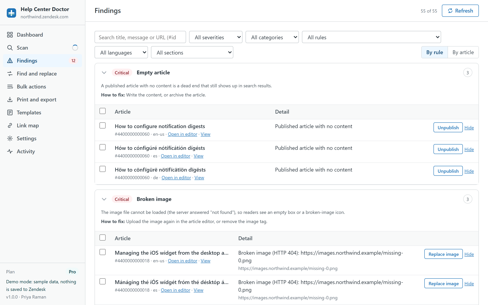
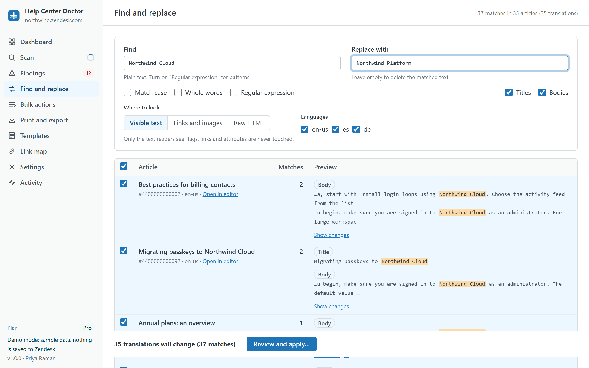
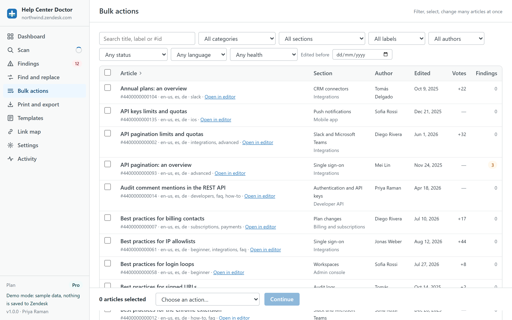
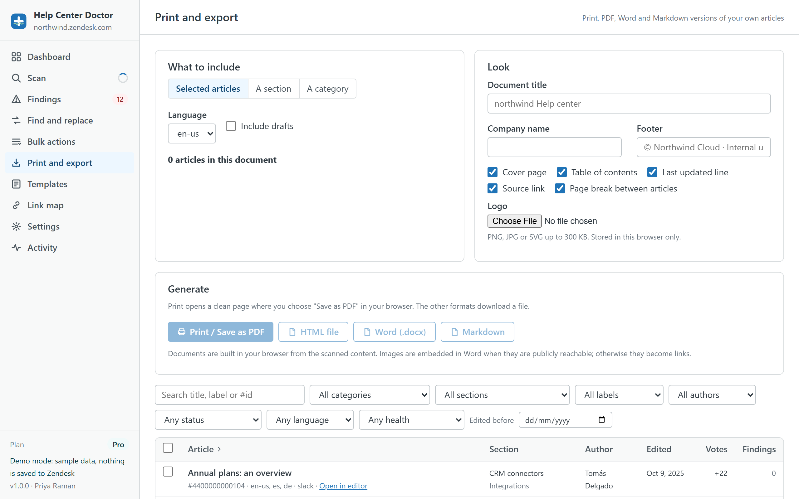
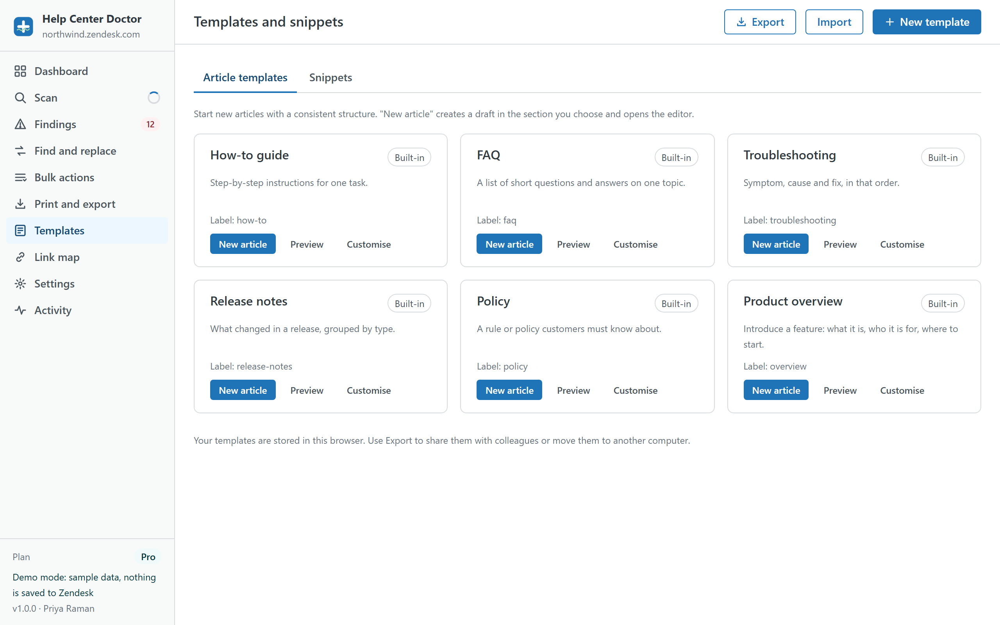
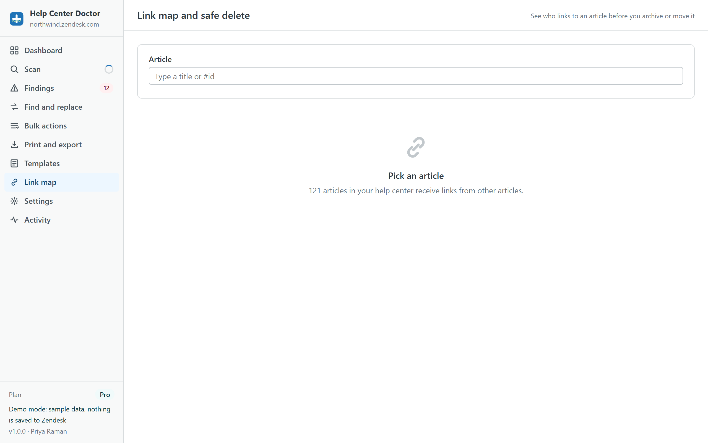

Seven modules, one scan, one safety path
Every module below works on the same scan of your help center and writes back through the same preview, snapshot and undo flow. Jump to: Health Scan, Fix Center, Find and Replace, Bulk actions, Documents, Templates, Link map.
34 rules across links, images, stale content, structure, accessibility, organisation and languages
The scan reads your articles with their translations, sections, categories, labels, authors, user segments and permission groups through the Zendesk API. It then runs every rule and produces a health score from 0 to 100 with a grade from A to F. Critical findings weigh the most.
After the first scan, Refresh reads only the articles that changed. External links and images are checked separately through Zendesk's request proxy, with results cached for 7 days so re-checks only spend the budget on new URLs.
Every rule can be switched off in Settings and every finding can be hidden. Thresholds for stale, short and long articles are yours to tune.

The 34 rules
All rules run on every plan. Rules marked Details on Pro show their count on the Free plan and their article-by-article detail on Pro and Business. Rules with a Fix badge can be resolved from the Fix Center; the others link straight to the Guide editor.
Links 9 rules
- Link to an article that no longer existsReaders who click this link land on a "page not found" error. The target article was archived, deleted, or the id in the URL is wrong.
- Link to a section or category that no longer existsThe section or category behind this link has been removed, so readers get an error page.
- Link to an unpublished (draft) articleThe target is a draft, so visitors cannot open it: they see a "page not found" error until it is published.
- Link to an article with narrower visibilityThe target article is restricted to a user segment that readers of this article may not belong to. Those readers get an access error.
- Link to a heading that does not existThe link points to an anchor (#something) that is not defined in the target article, so the page opens at the top instead of the promised place.
- Link to an old help center addressThese links point at a domain you listed as retired (for example a previous subdomain or host mapping). They may redirect today, but redirects are slow, break anchors, and disappear when the old domain lapses.
- Insecure http:// link or imagePlain http links trigger browser warnings and http images are blocked as mixed content on a secure help center, so they simply do not show. Images are reported as warnings.
- Broken external linkThe website behind this link answered "not found" (404/410). Readers hit a dead end and lose trust in the article.
- External link could not be verifiedThe site did not give a clear answer (timeout, login wall, bot protection or a server error). The link may be fine; it just needs a human look.
Images 2 rules
- Broken imageThe image file cannot be loaded (the server answered "not found"), so readers see an empty box or a broken-image icon.
- Very large imageImages wider than about 2,000 pixels are scaled down by the browser anyway; they only slow the page, especially on mobile.
Accessibility 3 rules
- Image without alt textScreen readers announce nothing useful for an image without alt text, and search engines cannot index it. It is also a WCAG requirement.
- Heading levels are out of orderThe article title is already the H1. Bodies that start with H1, or jump from H2 to H4, confuse screen readers and the automatic table of contents.
- Table without a header rowScreen readers rely on header cells (th) to tell users what each column means. Tables built from plain cells only are read as a stream of words.
Stale content 4 rules
- Article not updated for a long timeContent that has not been touched in a long time is the most likely to describe old screens, prices or policies. Readers notice, and so do search engines. Default threshold 12 months, adjustable.
- Old draft never publishedDrafts that sit for months are usually forgotten work. They clutter the article list and may hold useful content nobody can see. Default threshold 90 days, adjustable.
- Promoted article is stalePromoted articles are shown first in their section, so a stale one is the most visible outdated content you have.
- Readers vote this article downMore thumbs-down than thumbs-up is the clearest signal readers have that an article does not solve their problem.
Structure 6 rules
- Empty articleA published article with no content is a dead end that still shows up in search results.
- Very short articleArticles with only a sentence or two rarely answer the question fully and tend to collect negative votes. Default threshold 40 words, adjustable.
- Long article without headingsLong articles without H2/H3 headings are hard to scan, and anchors cannot be linked to. Headings also feed the article table of contents. Default threshold 500 words, adjustable.
- Heavy use of inline stylesInline style attributes (usually pasted from Word or Google Docs) override your theme, break dark mode and mobile layouts, and bloat the article.
- Script or form embedded in the articleScripts and forms inside article bodies are stripped or blocked by most help center themes and browsers, and are a security smell in shared content.
- Title is very longLong titles get cut off in search results and section lists, so readers cannot tell articles apart. Default threshold 90 characters, adjustable.
Organisation 6 rules
- Two articles share the same titleIdentical titles compete in search and confuse readers and agents about which one is current.
- Two articles have nearly the same titleTitles that differ by a word or two usually mean the same topic was written twice. Readers pick one at random.
- Article has no labelsLabels power help center search, Answer Bot and article recommendations. Unlabelled articles are found less often.
- Section with no published articlesEmpty sections still appear in navigation and search, leading readers to a page with nothing on it.
- Category with a single sectionA category that only holds one section adds a click without adding structure. Readers navigate faster when categories group several sections.
- Article in a section that no longer existsThe article points at a section that was deleted, so it cannot be reached from navigation.
Languages 4 rules
- Article missing in some languagesYour help center is enabled in several languages, but this article exists only in some of them. Visitors in the other languages get the fallback or nothing.
- Translation is out of dateThe source article changed after this translation was written, so readers in this language see old instructions.
- Translation is unpublished while the source is liveThe article is published in its source language but this translation is still a draft, so visitors in that language cannot read it.
- Source language is not one of the enabled languagesThe article was written in a language your help center no longer offers, so its "source" version is invisible and every translation is compared against it.
From finding to fixed without leaving the list
Findings are grouped by rule or by article and filtered by severity, category, rule, language or section. Each one shows what is wrong, why it matters and how to fix it, with links to the Guide editor and the public page.
- Replace a broken link, with suggestions of articles that have a similar title, or remove the link and keep the text.
- Replace or remove a broken image; add alt text to one image or the same alt text to many.
- Publish a draft target, switch http links to https, update a retired host, fix an anchor.
- Unpromote a stale article, unpublish an empty one, archive an old draft, mark a translation as current, publish a translation.
- Add labels or move articles to a section, for one finding or a selection of the same kind.
Several fixes on the same article are merged into a single write. Metadata-only fixes never touch the article body.

One search across every article and every language
Type what to find and what to replace it with. Matches are previewed live across every scanned article and translation with a highlighted excerpt and a word-level diff. Nothing changes until you review and apply.
- Plain text or JavaScript regular expressions with captured groups ($1, $2, $&).
- Match case, whole words, titles and bodies, any subset of languages.
- Visible text scope: tags, links and attributes are never touched.
- Links and images scope: only the address of links (href) and images (src). Ideal after a domain change.
- Raw HTML scope for experts, with a warning and the same snapshot protection.

Filter, select, change hundreds of articles at once
Zendesk's own bulk tools stop at 30 articles. Here you filter by search, category, section, label, author, status, language, health or last edit date, select everything that matches, and pick an action.
- Add or remove labels
- Move to a section
- Change author, visibility (user segment) or permission group
- Promote or unpromote, enable or disable comments
- Publish or unpublish, mark translations as current
- Archive, with a separate acknowledgement because undo cannot restore archived articles
Every bulk action is previewed article by article before anything is written, and articles that already have the requested setting are skipped.

Documents of your own articles, built in your browser
Pick selected articles, a whole section or a whole category in one language, with or without drafts. Add a document title, company name, footer and logo; turn the cover page, table of contents, "last updated" line, source link and page breaks on or off.
- Print / Save as PDF: opens a clean print page; the PDF comes from your browser's print dialog.
- HTML file: a self-contained document with the same print styling.
- Word (.docx): headings, lists, tables, links, code and callouts; images embedded when publicly reachable, otherwise linked.
- Markdown: CommonMark with tables, one file for the whole document.
Up to 200 articles per document on Pro and Business. The Free plan prints one article at a time.

Consistent articles from the first draft
Six built-in article templates (How-to guide, FAQ, Troubleshooting, Release notes, Policy, Product overview) and six snippets (note, tip and warning callouts, a steps table, a shortcuts table and a contact footer). Customise them or add your own with default titles, labels and the placeholders {{date}} and {{title}}.
New article creates a draft in the section you choose, with your permission group, and opens the Guide editor. Snippets are copied as HTML for the editor's source view.
Templates live in your browser. Export them as a file to share with colleagues or move to another computer.

Know who links to an article before you archive or move it
Pick any article and see every scanned article that links to it, with the link text and address, plus its own outgoing links. If archiving would leave broken links, the app says so and lets you redirect the selected links to a replacement first.
When nothing links to the article, it is marked safe to archive and you can archive it from the same screen.

The parts you notice only when you need them
Activity and undo
Every scan, check and change is logged in your browser. The last 20 change sets of the session can be undone, and any snapshot file can be restored later.
Rate-limit friendly
Requests go through a queue with a rolling per-minute budget and automatic backoff, so a scan never slows down your agents.
Read-only awareness
If your role cannot edit articles, the app says so up front and keeps everything else available.
Five app languages
English, Spanish, German, French and Portuguese (Brazil), following your Zendesk profile.
Settings backup
Export thresholds, retired domains, skip list, disabled rules and hidden findings as a file and import them in another browser.
Clear local data
One control removes everything the app stored in your browser. Your help center is not affected.
Try every module on sample data
The demo runs the real app on a generated help center. Scan, fix, replace and export as much as you like; nothing is saved anywhere.